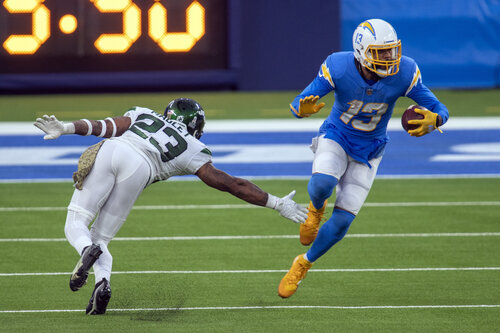
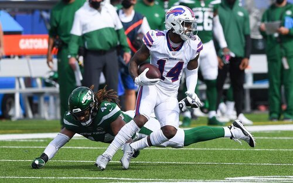
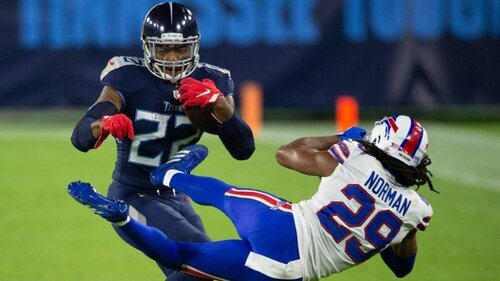
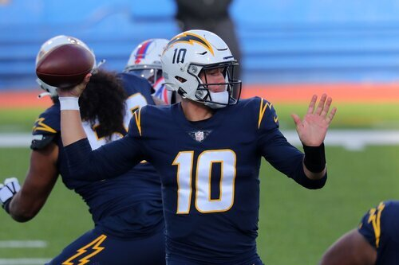
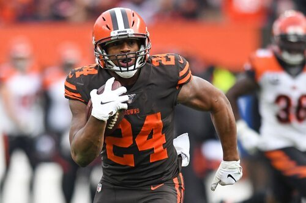

DECEMBER 17, 2020
CHAMPIONSHIP AND SLUTLER PREVIEW
THANKS FOR ANOTHER GREAT SEASON, YOU FANTASY FUCKS!
THE SHIP…

1. Keenan and Kelce v.
2. Christian Chubb Tucker
This TNF is gonna be the omen of all omens, will Allen be able to play the full game and put up decent numbers? I can’t afford to lose at any position with PJ’s potent squad. At QB, I fear Murray has returned to form after being banged up. Herbert has decent matchups over the next couple weeks, but has struggled recently of course. Will I resort to Baker v. NYJ next week, Jesus. RB is close - Henry looks capable of 30+ weeks, but we know sometimes he just gets bottled up. Cook is back in the kitchen. Ekeler v Chubb is great. PJ’s WRs have had some up and down recently, which guys show up for the two weeks, maybe all? Can I count on MT? I’m super thin at WR with Allen now nursing a hammy pull, if he’s out I may be done. TE is going to be huge - PJ picked up and stashed Kittle, who could play as early as this week. Gronk has been his most inconsistent player likely. Will Kelce continue his insane season to help propel me? Flex could be interesting. For me it’s Carson / Mike Davis, which directly is affected by PJ’s Nuk and CMC, will he be able to return in time to play in our matchup? Defense - I like to think we’re close. I got Browns who force turnovers and get sacks, against NYG and NYJ. PJ has Ravens agains JAX and NYG, they haven’t been as good recently but may be returning to form. Kicker looks like a dead tie with Tucker and Bass, the former is the GOAT and the latter is hotter.

GL!Prediction: Christian Chubb Tucker -19*
Why: Both teams are stacked, and getting a week of Kittle really helps PJ. Cook helps keep the ship on course and he gets enough elsewhere. I’ve got too much riding on the Chargers, and ultimately they’re coached by Anthony Lynn (though I pray my terrifying defense causes PJs team to collapse under pressure). *prediction is based on two-week matchup
SLUTLER SHOWDOWN…
10. Fuller Wood D v. 8. Hot Lockett
Lots of questionables, love to see that in the slutler finale! Does it really matter what happens, either way nine of us win.
DECEMBER 6, 2020
AWARDS & PLAYOFF PREVIEW
THE BEST OF THE BEST…
MOST VALUABLE PLAYER

Derrick Henry - Best player on the best team MVP here - my keeper delivered for me again, and in the most important week to seal up the #1 seed. This year lacked the clear cut choice, as it could have easily gone to any of the runner-ups here too. Honorable Mentions: Kamara, Cook, Murray, Hill, Herbert Last Year: Christian McCaffery (HM: Pats D, Michael Thomas, Lamar Jackson
BRIGHTEST FUTURE
Justin Herbert - It’s hard to reject what Herbert’s done, QB8 on the season and hasn’t even played in every game (and started one on a moment’s notice). His accuracy and arm strength make any throw possible, even while the Chargers fail to protect him well. Exciting to see our boy take off with such ease. Honorable Mentions: Metcalf, Jefferson, Chark, Chubb, Cook Last Year: Lamar Jackson,
BEST MOVE
PJ - Mixon and Brady for Chubb was huge. TB12 was picked up just the week before and took a turn downhill, and Mixon’s wasn’t on IR then but is now without playing a game since. the jury is still out on the CMC trade, which is a huge candidate here, too.

Honorary Mention: Tony added James Robinson, for $1. Neil added Justin Jefferson for $6. Herbert on the Monday after Dak went down, the day he started his run (and improved Allen’s worth tremendously). Last year: Ian - trading Allen for WallerPLAYOFF PREVIEW…
1. Keenan and Kelce v. 4. Everyday I’m Russellin’
Joel’s backing into the playoffs with an “I don’t care this week, I’m having a baby” vibe (congrats Joel!) Question marks all over this team though with White, Thielen, Diontae Johnson, Engram, Cooper, Crowder, shall I go on? My squad’s trending up, and I get to insert Ekeler. I look to have the clear advantage, but could Michael Thomas torpedo my season, definitely could happen though he faces the worst pass D in the first week. I’m also starting three Chargers now, could be a disaster if they have an off week. Prediction*: Keenan and Kelce (-16) Why: MT likely has a down game one of the weeks, but Joel has way too many question marks. *prediction is based on two-week matchup
2. Chubb Tucker v. 3. Unpaid Bills
PJ’s team has rode high most the season, but has had some no show weeks too. Will CMC be healthy and provide a turbo button? Will Nuk and Diggs be in their early season or of-late form? Neil’s team has been consistent, but slightly less potent, and Kamara trending the wrong direction. He’ll likely need big ones from JA17 and a huge game each week from either Brown, Jefferson or Julio to stay in the mix. Prediction*: Chubb Tucker (-4) Why: Neil gets out to a lead this week but tough Josh Allen struggles against Pittsburgh while Murray and Nuk carve up the Giants to win the matchup, all while CMC eases back into competition to get up to 100% for the championship. *prediction is based on two-week matchup
SLUTLER SHOWDOWN…
10. Fuller wood d v. 9. Bear down
Kris has apparently given up on the season and doesn’t have a lineup this week, so I’m gonna give that one to Matt.
7. RUB A CHUBB DUB V. 8. HOT LOCKETT
Should be real close. I like Gaskin and Mostert to keep things close, but Adams and Robinson are too much so Tony moves on.
WEEK 11 - POWER RANKINGS Getting down to crunch time!
Matchup of the Week:
Everyday I’m Russellin v Rub a Chubb Dub (see below for details) - TIER ONE - PLAYOFF BOIS
TIER ONE - PLAYOFF BOIS
1 - DK Metca$h (8-2)
Last week: 1 We’re all seemingly playing for second. Neil and I have just been talking about playing anyone besides PJ in the first round. Good luck to whoever gets that matchup.
2 - Unpaid Bills (8-2)
Last week: 2 Another big week from Kamara and JA, another big win. Likely first round preview this week with me, going with Jambo! How many picks will he throw? And how will he affect Kamara’s value in the coming weeks?
3 - Keenan and Kelce (8-2)
Last week: 3 Tough sub-100 week, but the matchups were pretty tough for me and I predicted this one coming. Things look better the next few weeks, just hoping this team gets a little more matchup-proof before playoffs, we’ll see. - TIER TWO - FIGHTING FOR FOURTH Five teams have a shot at fourth still, but Joel can seal it up with a win either week. Let’s take a look at how things can unfold. Joel wins 1, he’s in. Joel wins 2, I lose 2, I could get 4th still. Joel loses 1, then Week 12 could be nutty, if we get wins from other four-win teams. Joel, Chris, Andy, Tony and Ian only have 65 points between them (60 between me and Joel, so I doubt to be in the mix here). Oh, and listen to these Week 12 matchups: * Joel v Neil (playoff preview?) * Andy v CJ * Tony v Ian ** JUICY **
4 - Everyday I’m Russellin (6-4)
Last week: 6 Joel’s off another sub-100 win, and in the driver seat for fourth. Let’s see if he can blow this.
5 - Rub a Chubb Dub (4-6)
Last week: 7 A nice week from Tony, as Sanders returns to his lineup. Has the best shot if Joel drops too, but Q’s for Robinson, Adams and Ridley are scary, he could be done if they’re not back this week.
6 - baby chark (4-6)
Last week: 8 Still hanging around! Long shot with how far back, but has guys who can explode for huge weeks. Likely needs a crazy finish from Jacobs, Mahomes and Scary Terry/F1.
7 - rick n more tds (4-6)
Last week: 5 Has the talent to close the gap but this team’s trending the wrong direction. All the sudden his godly WR trio looks a little meh, and Edmonds no longer looks to be a viable RB2, even with the emergence of Swift, it’ll be tough to fill out RB - especially with $6 FAAB.
8 - hot lockett (4-6)
Last week: 4 Closest to Joel, but shat the bed last week. $7 left, 6 Questionables, 1 Out, 1 IR, good luck! - TIER THREE -
sLUTTY bUTLER aLERT
9 - not so fuller wood d (2-8)
Last week: 9
10 - beat down (2-8)
Last week: 10
WEEK 9 - POWER RANKINGS Week 8 was a real sleeper, with give teams around the league scoring less than 100. Hope that means this week will be a banger! All 3-win teams lost to keep it tight in the middle. While 1-3 pull away, 8-9 stay in the mix (Ian more so than Kris). Then there’s Matt. MATCHUP OF THE WEEK Keenan and Kelce (8-0) vs. DK Metca$h (6-2)
1 vs #2, not much more to say. I’m two games up on PJ, but he’ll likely keep the distance in points so I gotta finish above him for the top playoff spot.
WAIVER WIRE MAGICIAN Matt - $1 - Curtis Samuel - He’s been on a roll and he’s cheap. I like Justin Jackson period but who knows when the wind could turn in LAC.
1 - Keenan and Kelce* (8-0)
Last week: 1 It’s almost Henry season boys. And fuck me, can I please get MT back this soon? I’ve literally expected him back for four or five games. Really liking the idea of Allen, MT and Kelce in my catchers, they are just target hogs. But really trying to figure out my RB2 too. Thanks and sorry to everyone I keep sending offers to. * Clinched playoff berth
2 - DK Metca$h (6-2)
Last week: 3 Getting Cook back was a huge boost. PJ’s squad had the top two scorers for the week, and Nuk and Murray didn’t play. 200+ is always impressive. Big matchup can vault him back to #1 with a win (in the Power Rankings)
3 - Unpaid Bills (6-2)
Last week: 2 Barely gets out of Week 7 with a win, and a big win to keep some separation from the pack. Speaking of Pack, Jones is back but in what capacity? Loving the DJ Moore story too, who would have thought the ball would be getting spread around so much in Carolina and that all three WRs could be so productive. Nice pickup with AB too, kicking myself over missing him the day before.
4 - Hot Lockett (3-5)
Last week: 4 This team’s beat up but as CJ told me today, he think he can ride those injuries out and I think I agree. Glad I got to face him without CMC who looks on track to be on the field Sunday, and against a KC team that encourages RBs to be pass catchers (in that KC is usually up). One thing to note, CJ had a nice points advantage but that’s fading should he need a tiebreaker.
5 - Everyday Im Russellin (4-4)
Last week: 5 Tough week, could have been a good one to carve out a nice spot at 4th. There’s some question marks at WR here, but Joel’s looking good in the FAAB, maybe he can turn that into some nice late week pickups when we need em most.
6 - Rub a Chubb Dub (3-5)
Last week: 6 Tony takes a shellacking but gets right back up and says, “Hey that was nice, want to make a trade now?” I honestly like the attitude and think it could work out for either side. TB12 is basically a freebie but Mixon:Chubb could go either way. Need a new team name now though. And Tony please miss the playoffs, I don’t want to play this team any week really.
7 - Rick N More TDs (3-5)
Last week: 7 I feel like Andy’s team has been up and down, but in reality he’s just putting up about 110-130 over the last few weeks. Not bad but it just hasn’t been enough to get the job done. If he stays around there maybe he has enough to make a late push. When will Ekeler be back? We don’t know yet, but that would be a huge boost.
8 - baby Chark (3-5)
Last week: 9 Ian gets a big win to stay hunting, knocking off Joel who’s currently sitting in 4th. My concern is RB for the rest of the year - outside Jacobs, it’s just Bell and Hasty (who immediately loses value with any other SF RB getting healthy).
9 - Fuller Wood D (2-6)
Last week: 10 Kris gets a win in the Toilet Bowl, and the rest of the league pretty much stalled. If Joel stumbles to the line there could still be a path for Kris, but it’s a very thin line of a path. Kris will live and die by the with the Ravens.
10 - Bear Down (2-6)
Last week: 8 This guy wont trade me a RB so I’ve sabotaged his whole season. Last in points and in record. Hard to see a path to the playoffs here.
WEEK 8 - POWER RANKINGS It’s the second rivalry week of the year, hope you got your hate pants on this week. MATCHUP OF THE WEEK Rub a Chubb Dub (3-4) v. DK Metca$h (5-2) Tony’s hanging in the mix and PJ’s lost two straight. Bounce back for PJ or can DeVante keep DeVantee-ing. If not, it might be difficult. Good to face PJ in a no-Cardlinals week, but PJ sealed up another QB->Teammate duo with TB12 and Gronk, it’s worked mostly so far, why not now? WAIVER WIRE MAGICIAN I like Sterling Shepard at $3 for Matt. He could be a WR2 the rest of the way with his skill level. AB for $2 could be a nice replacement for Boyd going out to CJ too for Neil.
1 - Keenan and Kelce (7-0)
Last week: 2 I strike fear in my opponents as they typically forget to show up. Looks like MT will be back this week, which is perfect timing because Lamb and Claypool now look like neither are WR2s. I still have hope for Claypool but he just might be boom or bust (though the Titans shadowed him all last game, which I don’t expect many teams to do). Offensive Rookie of the Month and official big dogg, Justin Herbert, was the first QB to go over 1500 yards with a rating of 100+ in all games, through his first five games since 1970.
2 - Unpaid Bills (4-3)
Last week: 3 Kamara+Murray / Jones+Williams is very very strong. I’ll be interested to see if it means dropping one of them later in the season or another valuable player to keep those handcuffs, with our short benches. Neil, pick up Kenny Stills and change your name to Crosby Stills and Rash.
3 - DK Metca$h (5-2)
Last week: 1 Long atop he is now unseated. Still #1 in points, but two straight losses means droppin’ spots. Tough time to try to bounce back with Murray and Hopkins on a bye, but will we see Cook return? If he has Cook two weeks ago he’s 6-1. This should have been worth 6pts.
4 - Hot Lockett (3-4)
Last week: 4 JFC Lockett. JFC. That’s Hot Pockett Hot. Depth at RB, Tyler Lockett at WR and three straight wins make this team a real contender after a slow start. And oh, CMC should be back soon. Yikes. Plus, Chris is out for revenge this week after the .8 loss to me in Week 2. It’s so fucking rich that Gurley is the RB that stopped short of the line so famously, then this. I can’t even, thank you sports.
5 - Everyday I’m Russellin’ (4-3)
Last week: 5 “I beat PJ and didn’t move up a spot?“ It’s more a CJ thing than you. But, I think Joel’s gotta little WR crises brewing up right now. Cooper takes a huge hit over the last two weeks, Crowder’s banged up, Fulgam will lose share with healthy Eagles coming back. The real q for me is Dionte Johnson who looked great last week, but the Titans secondary is trash and they chose to focus on Juju and Claypool - but that may mean other teams do this same thing and Dionte is the winner. weeeeeeeeeeeeeeeeeeeeeeeeeeeeeeeeeee
6 - Rub a Chubb Dub (3-4)
Last week: 9 Goff, Kelley, Dobins does not inspire me, but dang it’s tough to lose your best two backs (Chubb and Sanders). But I am inspired AF about Adams and Ridley. How many of us are kicking ourselves over passing on Adams, which seems to happen in every draft again and again. He looks primed to make a run at top-three WR by EOY. I mean he’s played in four games (closer to three) and is WR14. So far if he’s played this year, it’s been 50:50 if he’ll score more than 40 😳. Robinson is not and RB2, he is RB2. Damn, a James Connor-like pickup. Nice work.
7 - Rick n MoreTDs (3-4)
Last week: 6 Dope receivers but not a ton outside that. Andy turns to a known shit licker in Carr this week on DeShaun’s bye (fuck the Raiders). Not a great time to be facing an almost-fully healthy Unpaid Bills team who are trending up. Could this be the big Tyreek week though against the known shit licking team, the Jets? Robby Anderson is really making a name for himself in Carolina with a non-disfunctional team. The Jets only ran him on fly routes, wtf.
8 - Bear Down (2-5)
Last week: 7 Tough to lose Godwin again and have Bell show up in KC to take away points from CEH. But to me the big surprise is Jonathan Taylor not exploding after Mack’s season-ending injury - RB19 isn’t bad but no only one game with over 16 pts. I thought his RB draft choice was cheeky and it might be exactly that. Matt has Rodgers and Wentz - After Rodgers meteoric start, Wentz has now surpassed him and is surprisingly QB7. Tough to decide each week I guess, but even more so, tough to trust Wentz ever even at this ranking.
9 - Baby Chark (2-5)
Last week: 8 Three straight sub-100 weeks, woof. At first I placed Matt here but when I saw that I had to drop Ian a spot. God it’s funny though, I look at this lineup and I like a lot of it. Maybe a sleeper to move back up before the end of the season. Also, DJ Chark has been so disappointing, guess he wasn’t ready for the pressure of being a team name pun. Bell looks good in a KC uni, I can’t lie (plus the snow - this photographer’s a boss)
10 - Fuller Wood D (1-6)
Last week: 10 Wk 7: 52.72 pts. Streak: L6.
WEEK 7 - POWER RANKINGS It’s been a while, thanks for not pushing me on these, I’ve been busy with the puppy and a year long project at work that’s finally to the implementing phase. Jumping in, dang last I wrote Andy was staring the Slutler in the face, now it’s a lot more open, especially with CJ’s big W over PJ. MATCHUP OF THE WEEK Keenan and Kelce (6-0) v. Fuller Wood D (1-5) No super great matchups but I find this one intriguing because we’ve been at opposite ends of the opponents we face. I have the least points agains and Kris has the most, at 1-5, he’s very capable of dealing the first loss to me, but I do get lucky to face him in a Lamar-less week. And maybe Kris is a good luck charm for me too. WAIVER WIRE MAGICIAN Joel with Fulgham at $2 and his opponent this week, PJ, stashing McKissic for $3.
1 - DK Metca$h (5-1)
Last week: 1 Can’t sneak myself passed PJ with his points for being so much higher than me, and the record helps keep him in this spot. Hopkins finally came down to earth, for how long we’ll see. Burning Q: How will he fare with Cook out?
2 - Keenan and Kelce (6-0)
Last week: 2 Undefeated and coming off my best week. Still missing MT, but Claypool looks to be a solid replacement for now. Burning Q: Is Herbert a legit every-game FFB starter to replace Dak?
3 - Unpaid Bills (4-2)
Last week: 3 Not a lot changing at the top here. Jones, Jones and Kamara is so nice if Julio’s going at all. Burning Q: Will the carousel at TE cost him eventually?
4 - Hot Lockett (2-4)
Last week: 10 Overreaction or underreaction to his big upset? (and $50 cash) I’ve been a big fan of CJ’s moves recently, and 2-4 is good enough to be in the mix right now. This team’s pretty deep and has a lot of upside, but that comes with some risk. Burning Q: Is $19 FAAB gonna last?
5 - Everyday I’m Russelling (3-3)
Last week: 5 Winning with 92 points isn’t glamorous but it’s still a win. Joel gets leapfrogged here, but the win keeps him in a great spot for playoff contention. Burning Q: Can you trust Kareem Hunt? (not if you’re a woman, but I mean in FFB)
6 - Rick N More TD’s (3-3)
Last week: 7 We counted this dude out and he’s right back in it. The ghastly trade he took so much shit for now looks pretty good with both of us having dropped a player, and McKinnon stock soaring while Lamb’s drops. Playing the lonnnng con. Burning Q: How will he fill RB1/RB2 every game? (lots of good but not great options)
7 - Bear Down (2-4)
Last week: 4 Probably the best RB depth in terms of numbers, but relying on Montgomery, Taylor, Drake or Gibson has been tough - seems like it’d be easy but some weeks these guys just flop. Will Godwin give Matt a needed boost? Burning Q: Which OBJ are you getting each week?
8 - Baby Chark (2-4)
Last week: 8 I feel this team has a big week coming sometime soon and could turn it around still, but time’s running short. WR depth is good but leads to starting the wrong guy sometimes. Burning Q: Could LeVeon be a banger in KC and save Ian at RB2?
9 - Rub a Chubb Dub (2-4)
Last week: 6 Tony’s spiraling with three losses in a row, but he gets a maybe favorable matchup with Matt this week - the loser could be in trouble
10 - Fuller Wood D (1-5)
Last week: 10 Kris can score but needs a break to get back into it after a strong week one win, followed by five losses. Even Lamar has seemed human. And the Woods/Higbee pairing seemed like a great duo duo to rely on, but the TDs in LA are getting spread around. Burning Q: What’s going on with Zeke fumbling, and can he stay out of his head?
WEEK 5 - POWER RANKINGS MATCHUP OF THE WEEK Rick n More TDs v. Everyday I’m Russellin’ This one intrigues me! It’s Rival week #1 and last year’s Slutler is looking Andy in the eye. Andy’s trade got lots of shit yesterday but he’s trying and he’s not in last any more. Maybe the tides are turning. WAIVER WIRE MAGICIAN Two strong moves from #9 and #10 (in standings), both guys could see increased roles this week and further into the future potentially. * Andy - $1 on Edmonds * Chris - $3 D’Ernest Johnson (Thursday)
1 - DK Metca$h
Last week: 1 In another league in points and 4-0, just look at the team and it’s easy to see how they’re 4-0.
2 - Keenan and Kelce
Last week: 3 4-0 too, but only 5th in points. Hope to get a boost from my #1 pick this week who’s netted me 4.7 points all season. Got deeper this week with Deebo and CeeDee, but my RBs are all either in a timeshare or a Titan.
3 - Unpaid Bills
Last week: 3 Neil’s easily to the closest to PJ in points but lots of injuries, a Titan and Bill, things might be weird this week. Jones, Edelman and Brown all carry the Q this week, but Justin Jefferson was a nice addition that flew under the radar and should fill in nicely.
4 - Baby Chark
Last week: 6 Ian gets a boost here from the super close win. Good to see Chark back in form, that really solidifies this young team at WR. And we haven’t even got the banger from Mahomes yet.
5 - Bear Down
Last week: 8 Matt’s team moves up and down faster than a jack rabbit. 0-2 to 2-2 ontop of OBJ and CEH, great pickup with Schultz this week, and I freaking love your love for Minshew - let’s get him on the Bears.
6 - Fuller Wood D
Last week: 5 This is a team I don’t want to face, and the points for justify that. But, let’s see what’s up with Lamar, and if Kris is stupid enough to sit locks like Carson going forward.
7 - Everyday I’m Russellin’
Last week: 4 The lowest 2-2 ranked team, Joel’s got some proving to do still. Is he third in points, yeah, but I don’t believe in him yet! Hunt’s stock is booming, and WR1/WR2 are locks, but I worry about Conner and the Flex on this team, it’ll be tough to know what to get from Crowder, White, Watkins and Renfrow week in and out.
8 - Rick N More TD’s
Last week: 10 Andy rockets up to 8 mainly out of what’s happening at 9 and 10, plus let’s give the guy a break this time. Injuries at RB have decimated Andy recently so we’ll see how long he can stay here.
9 - Rub a Chubb Dub
Last week: 7 I had this team circled as the to-boom team but it’s been tough to put it together consistently for a lot of the guys on the squad. WR3, TE3, and RB6 is great, but around it what’s happening with Kupp and Sanders?? Injury to Chubb is a killer obviously.
10 - Hot Lockett
Last week: 9 Last week was rough when you get 83 points from Kittle, Davis and Fitzpatrick but somehow lose. CJ has a loss by .16, 1.32 and 1.68. The luck’s gotta turn but 0-4 is 0-4 and the basement.
WEEK 3 - POWER RANKINGS
WEEK THREE
Woof what a week, hope your squad made it out unscathed - and if you didn’t, hope you’re doing alright.
MATCHUP OF THE WEEK
DK Metca$h (2-0) vs. Unpaid Bills (2-0) Pretty clear why, right?
WAIVER WIRE Wizard
Gonna toot my own horn. McKinnon and Gage both for $1 (after I dropped him last weekend). McKinnon had an offer for $8 and $5 that fell through when other players processed ahead. Later in the day we found out Coleman will be out a few weeks likely, and Julio Jones’ hammy might be serious (Gage is WR11 with JJ already in the lineup). Full report
1 - DK Metca$h
Last week: 2 Virtually 1A to Neil’s 1B, but giving the nod to PJ who’s a little healthier, with Julio up in the air for Neil. Murray + Nuk has been amazing and likely will continue. It’d be nice to see Mixon with more production.
2 - Unpaid Bills
Last week: 4 RB1, RB2, QB1, that’s not a bad backfield. It gets a little harrier after that but there’s enough to scare you at every position still. DJ Moore could be a flex point on this team if AJ Brown or JJ miss anytime at WR, I don’t know what to think of Moore so far.
3 - Keenan and Kelce
Last week: 6 Pretty much here because I’m 2-0 (but only with an average win margin of 2 points a game, but winning is winning). So many injuries made me think I was in a better position when I saw less Out, Doubtful and Questionable… but this was at the cost of losing Sutton for the year, not a good sign. Could use a big game from Henry right about now.
{kind=link}
4 - Everyday I’m Russellin’
Last week: 5 Joel manages to move up a spot despite losing Saquon for the year. Hunt’s production has been amazing, pair that with the superhuman ankles of Conner and he might be okay at RB. While he ws upset initially, I predict James White will be a better pickup at $5 for Joel than Freeman would have cost him (though he complained that PJ got him, but didn’t place an offer himself).
5 - Fuller Wood D
Last week: 1 After a yuge week one, Kris looks beatable. It’s easy to have a good week, but it’s another to maintain it. I believe this was a trend last year too - Kris has spent $0 on his team. This is a testament to its health, ad some good backup finds in the draft, but I can’t see why McCoy and Cohen are on this squad still, maybe it’s just me.
6 - Baby Chark
Last week: 3 A close loss has Ian falling a few spots, though I love the spend on Joshua Kelley - just read he’s somewhere around sixth in carries so far. Another team to get hit hard by injuries, if Jacobs is out, RB is looking pretty slim. Bright spots - Hurst with a monster game, that seems a precursor to many more as Ryan and the TE and build chemistry.
7 - Rub A Chubb Dub
Last week: 9 If there’s a squad I’m sleepin on this might be it. Ridley was one of my favorite picks of the draft and is sitting at WR1 so far, but what impressed me most was seeing Tony’s projections this week. Every single player is projected with at least 11 (sans D/ST & K). No serious injuries and nice depth might be good enough to keep this train a chuggin.
8 - Bear Down
Last week: 8 Matt’s in a tough spot at RB, he actually has a lot of depth, but you can only play three RBs. Early on I said OBJ and Godwin could win any week, but they might be responsible for L’s too apparently. QB is gonna be tough to get right week in a week out with Tannehill and Rodgers (you cheese head).
9 - Hot Lockett
Last week: 7 The loss of CMC this week really hurts, especially when paired with Kittle and Golladay, yikes. Chris is going to need to be creative this next few weeks, but I like the activity on the FAA, never a doubt he wants to get the W. Maybe it’s Mike Davis season, we’ll see.
10 - Rick N More TDs
Last week: 10 I hardly have to look at Andy’s team to rank him here. Yes he’s last in points, but it’s so early one week could have him in the middle of the pack. However, the lack of self confidence is the main factor in placement. Get off your ass and get out of the cellar on your own, don’t own it.
WEEK 2 - POWER RANKINGS
WEEK TWO
A new threat arises from the last year’s ashes.
MATCHUP OF THE WEEK
Everyday I’m Russellin’ (0-1) vs. Hot Lockett (0-1) Both are looking to rebound from tough first week losses, could be big to establish early positioning. Keep an eye on Wilson versus a tough NE secondary and Gallup versus a non-existent Atlanta secondary. With Lockett in the mix here, it’s going to be interesting to see if Seattle’s week one boom was more Seattle O or ATL D. Honorable Mentions: Jake & Ian are the only two 1-0 teams meeting, and Matt versus PJ is always a classic.
1 - Fuller Wood D
LAST WEEK: 4 If Lamar and Andrews continue to hook up like that, we’re in trouble. Elliott and Carson may be the best 1/2 RB tandem in the league too. And Evans/Woods looks super solid but both guys have injury history (Evans showing it in Week 1)
2 - DK Metca$h
LAST WEEK: 3 Tough first week losing Mack, but Snell could be a great pick - I wouldn’t be at all surprised if Conner is more hurt then leading on. The Hopkins / Murray duo is off to a great start, plus Diggs in new digs.
3 - Baby Chark
LAST WEEK: 9 The big mover this week, the Charks put up a nice score with plenty leftover on the bench. A nice debut from JuJu is promising for this deep team, raising its ceiling. Nice pickup with Parris Campbell this week too.
4 - Unpaid Bills
LAST WEEK: 7 The Unpaid Bills rode Josh Allen fittingly so, which paired nicely with a 40 pt from Kamara + Jones. Little bit of concern at WR, even with Julio Jones’ typical huge yardage/target week.
5 - Everyday I’m Russellin
LAST WEEK: 1 Pretty tough luck for Joel to face the top scoring offense coming off last year’s mess. But there’s a lot to be optimistic about here. Theilen, Crowder and Wilson were studs and I expect that to continue. RB depth is scary with Conner’s health in question, but he carries no designation at the time of print (lol, print, look at me).
6 - Bowen Constrictors
LAST WEEK: 2 I got pretty damn lucky week one, if CJ hadn’t sniped DeSean Jackson from me, I wouldn’t have squeaked out the win as John Brown was next on my bids, and my top scorer. Currently four injured players on the squad including my first-rounder, spent a ton on Hines we’ll see how that goes.
7 - Hot Lockett
LAST WEEK: 6 Solid first week from CJ, where he put up 116, without any huge performances from guys that are known for them (Lockett, Kittle, Jones [with Golladay out that is]). I think this lineup’s going to be tough to get right week in and week out.
8 - Bear Down
LAST WEEK: 5 Lots of upside but a disappointing first week, especially after Edwards-Helaire’s big debut on Thursday. First-rounder Drake may also be getting his touches cut into, will be worth monitoring. Think Rodgers is likely to be a good pickup, but what kinda Bears fan does that? Might need to update the team name this week ya Cheese Head.
9 - Rub A Chubb Dub
LAST WEEK: 8 WR1 and WR2 in the first week is stong. But not getting to 100 with that huge production is rough. Good news today that Miles Sanders is a full participant though, and I liked what I saw from DJ - that could be a game changer.
10 - Rick n More TDs
LAST WEEK: 10 No surprise here, Andy gave up on his team before we all did. I heard he was seen shopping for a skanky outfit for next year already. Like the Brown pickup this week though, and Fant could be a fantasy breakout inbound.
WEEK 1 - POWER RANKINGS
WEEK ONE
In a year of uncertainty, I’m just as uncertain. But I’m certain this is a surprise at number 1.
MATCHUP OF THE WEEK
Fuller Wood D v. Everyday I’m Russelin’ These two sat near the bottom last year but both have been cleansed and are tied for first place. Will one emerge as a contender this year?
1 - Everyday I’m Russelin’
LAST WEEK: NA ↔ Joel has players who could finish at #1 at every spot on his lineup. I think depth is a concern though, and that means making the right moves. We’ll see how long last year’s joke sits atop 2020. Favorite pick: Adam Thielen
2 - Bowen Constrictors
LAST WEEK: NA ↔ I love my starters and if healthy, think I got a legit shot. I hate my bench, so gotta fix that in the first few weeks or it could be a tough year. Favorite Pick: Travis Kelce
3 - DK MetCa$h
LAST WEEK: NA ↔ Apart from a couple question marks this squad is deep. Some weeks Cook+Mixon will be the best RB combo, some weeks Metcalf/Diggs/Hopkins will probably do the same. I think most of us have Murray as a likely boomer in his sophomore campaign too. Favorite Pick: Raheem Mostert
4 Fuller Wood D
LAST WEEK: NA ↔ Consistency can be king and this team has a lot of it with Woods, Evans, Edwards, Elliott, Carson, Jackson and Tucker. Outside these guys though, I don’t know where scoring is coming from with the depth, but we shall see as the season unfolds. Favorite Pick: Robert Woods
5 - Bear Down
LAST WEEK: NA ↔ 1st place last year, but last in our hearts. Matt’s squad’s looking pretty strong but will his affinity for rookie RBs be his fate or his feast? If OBJ has a bounceback season WR is LOCKED, and he’ll only have to worry about shakey Stafford and picking the right RBs. (oh and Gronk) Favorite Pick: Antonio Gibson
6 - Hot Lockett
LAST WEEK: NA ↔ RB could be a home run or a disaster. It’s hard to imagine CMC having a poor year, but it’s easy to see it with Gurley. If CMC misses any time, Chris will be left to plug in Jones II or Henderson, both in crowded backfields. Lockett, Golladay and Kittle is tough though. Fvorite Pick: Marvin Jones Jr.
7 - Unpaid Bills
LAST WEEK: NA ↔ I like this squad’s depth but think the ceiling is low for most guys. It’ll definitely be interesting to see how Kamara and Aaron Jones do, those guys have hiiiigh ceilings, but both can disappear here and there and have some injury concern. Could this be the year we see Julio start to decline too? We’ll see! Favorite Pick: Julian Edelman
8 - Rub a Chubb Dub
LAST WEEK: NA ↔ Could be a lot better than this ranking but to me this is the Old Guy team and that scares me. Brees, Adams, Green, Kupp and DJ are somewhat brittle with Green being a big question mark. BUT there’s some nice you supplements too, hard to judge this squad. Favorite Pick: Calvin Ridley
9 - Baby Chark
LAST WEEK: NA ↔ Bell and Smith-Schuster are reunited and it feels no good. (Big Ben is a free agent too Ian!) This combo scares me if JuJu can’t get his magic back. Hopeful for big leaps with F1 and Chark, but both are on troubled squads. I can talk myself into most the guys on this team, but can talk myself out of most too. Favorite Pick: Josh Jacobs
10 - Rick n More TDs
LAST WEEK: NA ↔ Surprise first round pick, Ekeler, will need to be good for us to forget where he was taken - it could happen. But back that against Ty Hill and it’s a risky 1-2. The drop of Fournette and AP crowding up Swift’s backfield feels like an omen to me. Gotta feeling this is the always injured squad this year amongst other troubles. Favorite Pick: CeeDee Lamb
OFFSEASON NEWS PT. 2 Sup nerds, here are the details for the upcoming season, as voted on and interpreted with League Owner, PJ.
Buy-in - This year is $50, next year is $100
Start putting $5 away here and there until next year so this doesn’t come as a surprise. It’s also possible this year could be whack so let’s keep it chill. PJ and I will do our best to navigate the waters if this season gets weird. Dues are due by draft-time please (or text me to lemme know your plan if needed).
Draft - In-person / Zoom
We’ll keep the date of August 29, but move it later in the evening to be a little more accommodating. We will have a physical draft draft board at the main hangout and a Zoom call for non-attendees. If you can’t make the draft, we’ll do our best to draft the winning squad for you based on rankings, or you can designate someone to draft for you, whatever, we’ll figure that out if needed. We’ll be working out the IRL draft location shortly. Please don’t feel pressured to attend if you’re unsure, we’ll pimp the Zoom setup good.
Bench Spots - 5+IR
The vote was clear that we’d keep this at 5+1, but we may end up adjusting this in season if needed due to covid.
Divisions - One
Just one division, like last year. The division settings in ESPN are super limiting and suck. We’ll keep this on the radar for the future. I’ll be making our schedules are balanced, as it was brought to my attention that the last two seasons we’ve played the same folks twice.
Stay well my friends!
OFFSEASON NEWS AND POLLS Hey fellas, It’s good to see football on the horizon! We’re planning on moving forward this year like any other year, but we’ll see how things go. Just a few announcements below, plus a short poll. One thing I’d like us to consider is two divisions. I personally like the idea of doing two divisions and playing more in-division games year to create a interleague feel, but maybe you hate this idea too. With WA / OR divisions, we could also have the champ decide on next year’s draft location too, but again maybe you hate this.
News:
- Draft Date - Our FFB draft is two months away, set for August 29, 2020.
- Answer the poll below on if you want to be in-person, then we’ll start planning this quickly - there’s a couple options in the air, likely we’ll try to be somewhere where we can be outside as much as possible.
- Buy-In: $100 - I’d like to increase our yearly buy-in is $100.
- I don’t want to lose anyone, but a lot of folks have requested a raise in the buy-in and I agree. I aim to make this the best league you’re in, so hopefully it’s worth it, and ya know, you could win and cash in big time. (vote below)
- Keepers - If you need a refresher on the keeper rules, check out this post.
- You can also find last year’s draft results here. If your keeper wasn’t drafted, today’s rankings from ESPN have been captured here, where I’ve created a spreadsheet of the three available writer’s ranks. We’ll average these three to find their rank if needed for someone’s keeper. The player you keep must have ended the season on your team (your roster is available on ESPN). It is okay to forfeit your keeper.